En este ejercicio hay que acabar entregando una carpeta con el nombre del alumno y que contenga:
las capturas de pantalla del escritorio completo (que se llamen X-Y.png donde X sea el número de ejercicio e Y el número de captura del ejercicio). Haga capturas:
de la página o el programa en la que ha resuelto cada ejercicio
del resultado obtenido en la aplicación
el fichero estilo.txt del ejercicio 8.
el fichero alias.txt del ejercicio 9.
la carpeta de la aplicación (comprimida en un zip) del ejercicio 10.
En los enunciados de los ejercicios se muestran capturas parciales como ayuda, pero las capturas que se entreguen en el examen deben ser capturas de toda la pantalla.
Descomprima Dokuwiki (llame a la carpeta /dokuwiki).
Instale Dokuwiki abriendo la página correspondiente:
Llame al wiki "WebApps Wiki de SuNombre".
Haga que la wiki sea de tipo Público (todos leen, los usuarios registrados editan).
Haga que los usuarios no se puedan registrar ellos mismos.
Cree el usuario administrador con nombre de usuario admin y contraseña adminadmin y escriba su nombre real como nombre a mostrar.
Haga una captura nada más terminar la instalación:
2. Configuración del sitio (0,5 puntos)
Cambie el idioma del sitio al español:
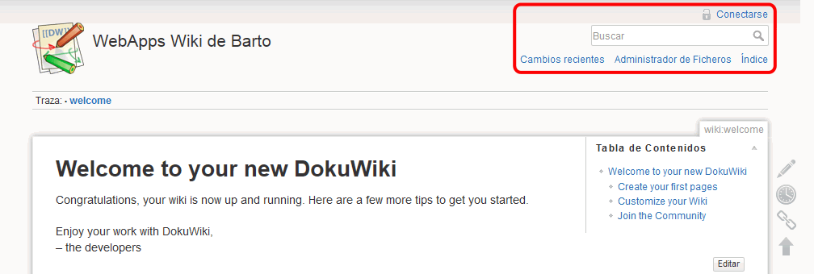
3. Crear elementos (1 punto)
Cree la página inicial (la que se muestra en la dirección /dokuwiki):
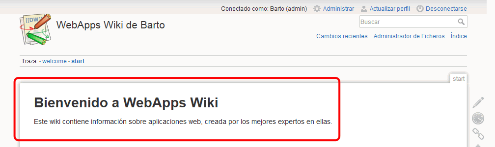
Cree dos usuarios no administradores, con contraseña igual a su nombre de usuario, y un grupo cms al que pertenezcan todos los usuarios:
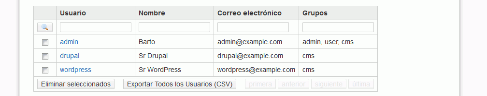
4. Configurar permisos (0,5 puntos)
Configure los permisos, de manera que:
los usuarios no identificados sólo puedan leer páginas:
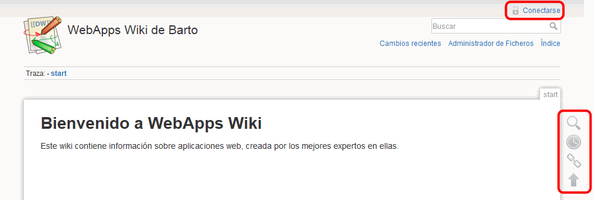
los usuarios identificados puedan crear páginas:
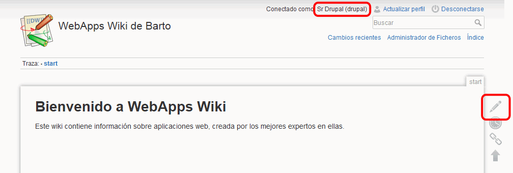
5. Añadir páginas (1 punto)
Como usuario drupal, añada una página sobre Drupal, enlazada desde la página principal:
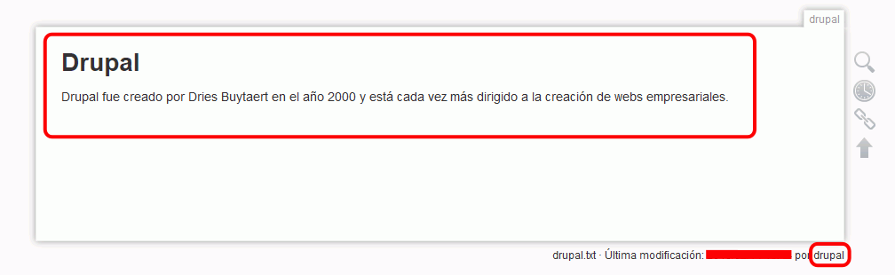
Como usuario wordpress, añada una página sobre WordPress, enlazada desde la página principal:
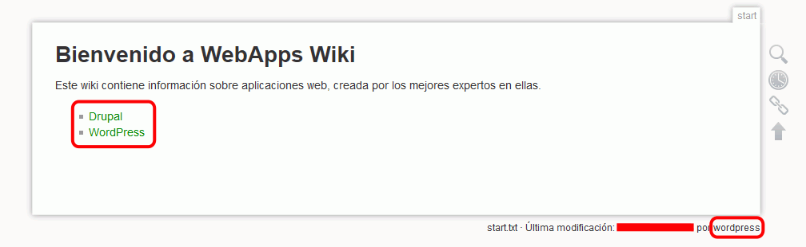
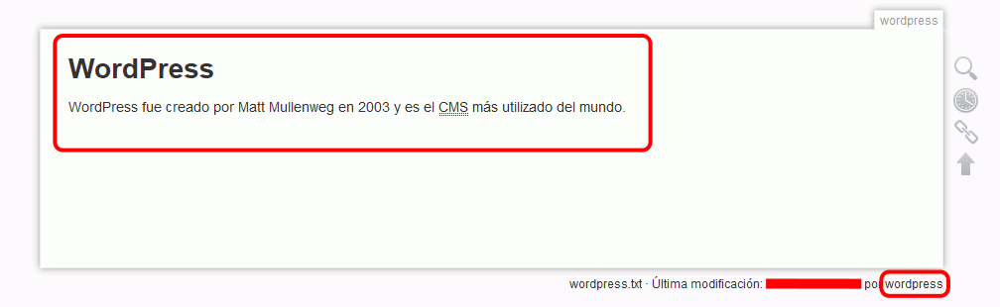
6. Idiomas (0,75 puntos)
Cambie la traducción de algunos elementos de la interfaz:
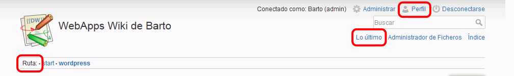
7. Añadir captcha (0,75 puntos)
Instale el plugin PreRegister, que puede descargar con este enlace:
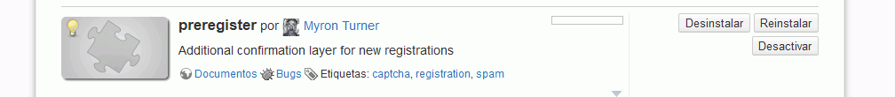
Cambie la configuración para que los visitantes puedan registrarse y se muestre el enlace de confirmación.
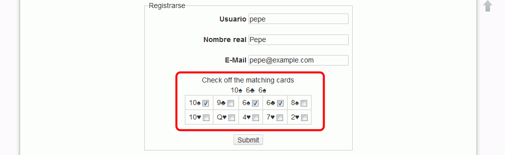
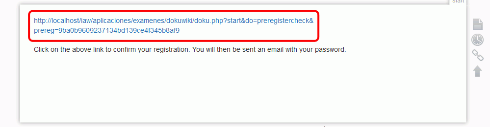
Asigne contraseña al nuevo usuario y entre como ese usuario:
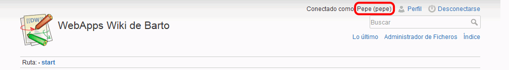
8. Crear nueva plantilla (1,25 puntos)
Cree una nueva plantilla a partir de la plantilla predeterminada y actívela
Pista: Plantilla se dice en inglés template, y se escribe en forma abreviada tpl.
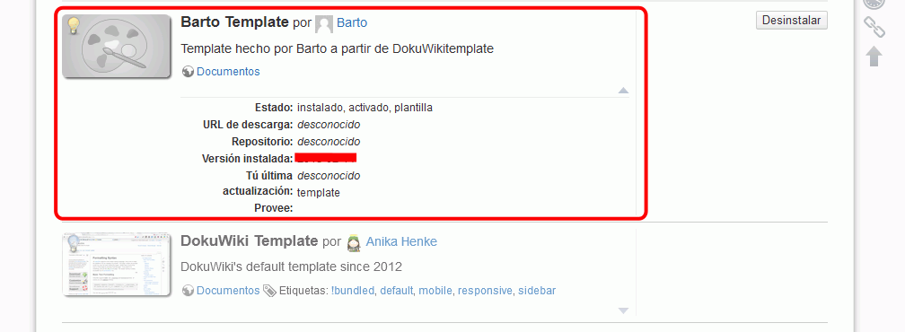
Como administrador, modifique dos colores de la plantilla (verde claro en el fondo y verde oscuro en el borde)
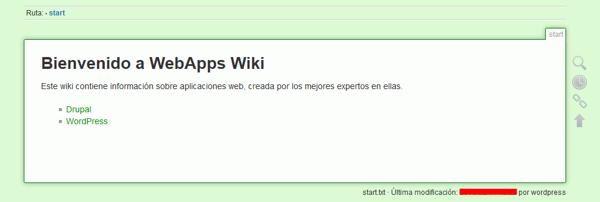
Cambie el logotipo () y modifique el archivo de la hoja de estilo para conseguir el siguiente resultado:
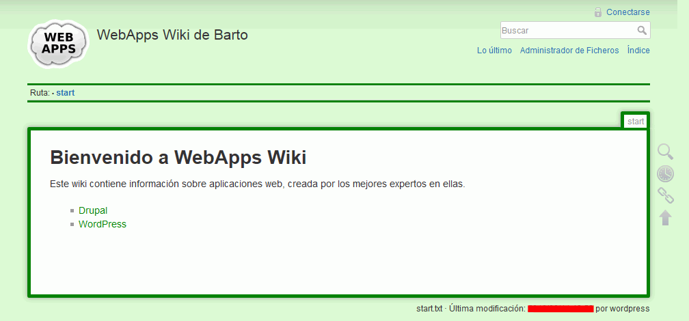
Nota:
Para encontrar el fichero de hoja de estilo a modificar, utilice la opción de NotePad++ Buscar > Buscar en archivos, buscando únicamente en la carpeta de su plantilla, para localizar los nombres de las clases que intervienen.
Cree un fichero estilo.txt con las reglas añadidas o modificadas.
9. Alias (0,5 puntos)
Cree un alias para poder acceder a Dokuwiki mediante la dirección http://localhost/wiki.
Escriba un fichero alias.txt con el alias que ha creado.